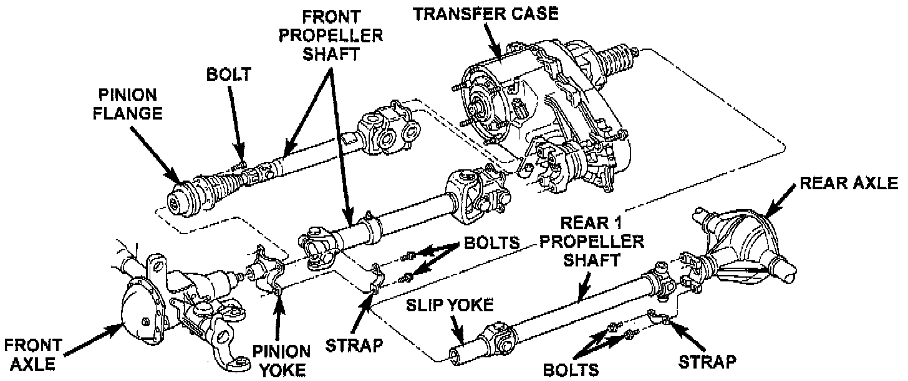

General Information

The function of a propeller shaft is to transmit power from one point to another in a smooth action. The shaft is designed to send torque through an angle from the transfer case to the axle.
The propeller shaft must operate through constantly changing relative angles between the transmission and axle. It must also be capable of changing length while transmitting torque. The axle rides suspended by springs in a floating motion. This means the propeller shaft must be able to change angles when going over various roads. This is accomplished through universal joints, which permit the propeller shaft to operate at different angles. The slip joints (or yokes) permit contraction or expansion.
Tubular propeller shafts are balanced by the manufacturer with weights spot welded to the tube.
The propeller shaft is designed and built with the yoke lugs in line with each other which is called phasing. This design produces the smoothest running condition. An out of phase shaft can cause a vibration.
Before undercoating a vehicle, the propeller shaft and the U-joints should be covered. This will prevent the undercoating from causing an out of balance condition and vibration.
CAUTION: Use exact replacement parts for attaching the propeller shafts. This will ensure safe operation. The specified torque must always be applied when tightening the fasteners.